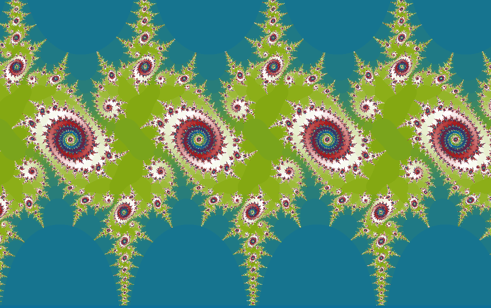
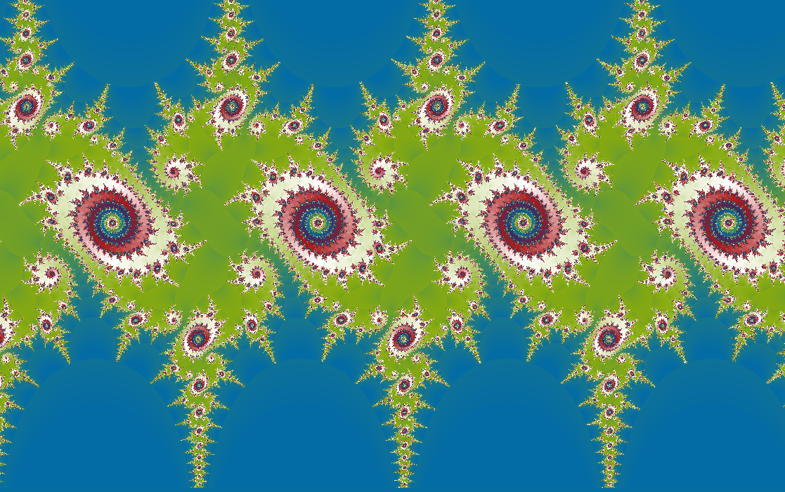
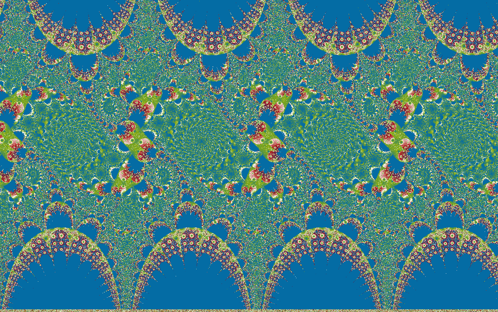
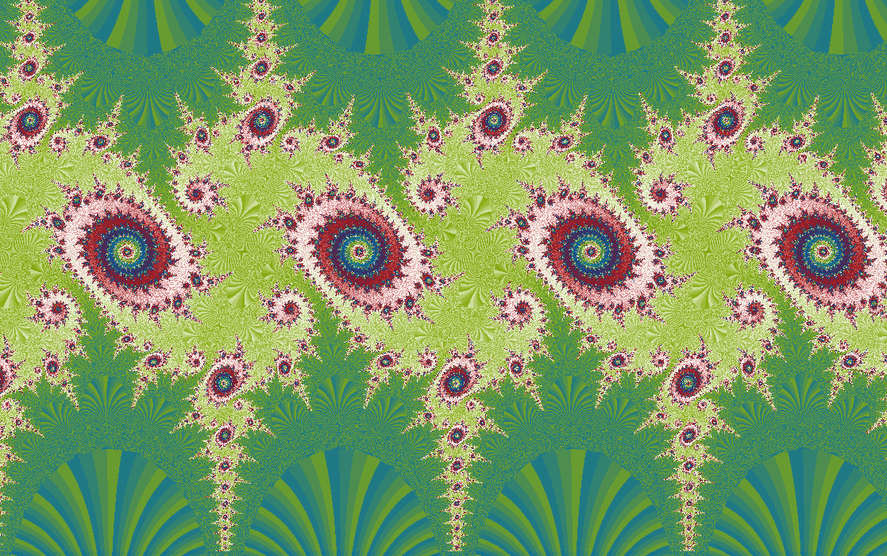
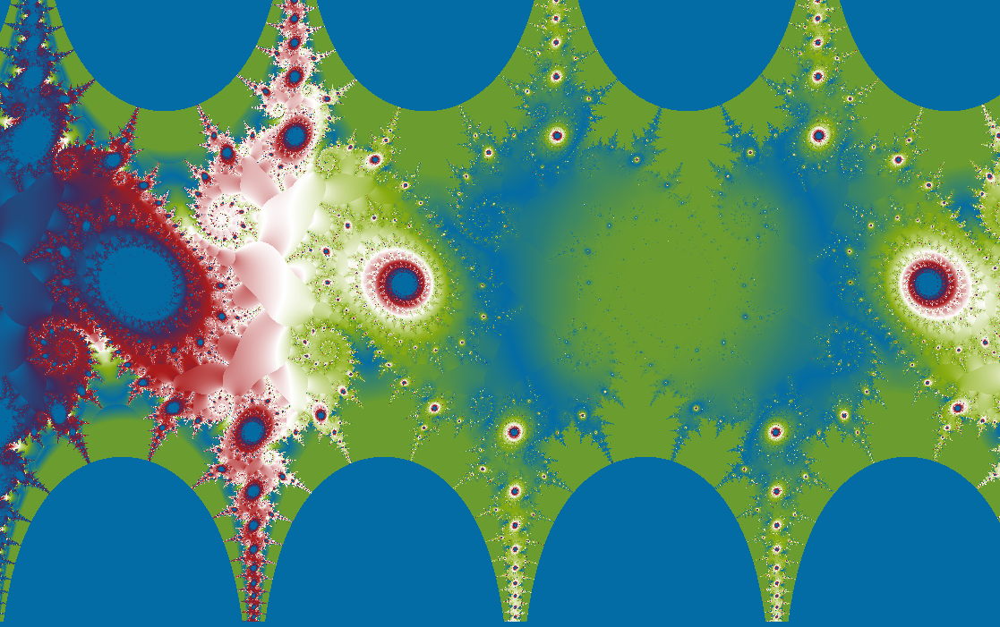
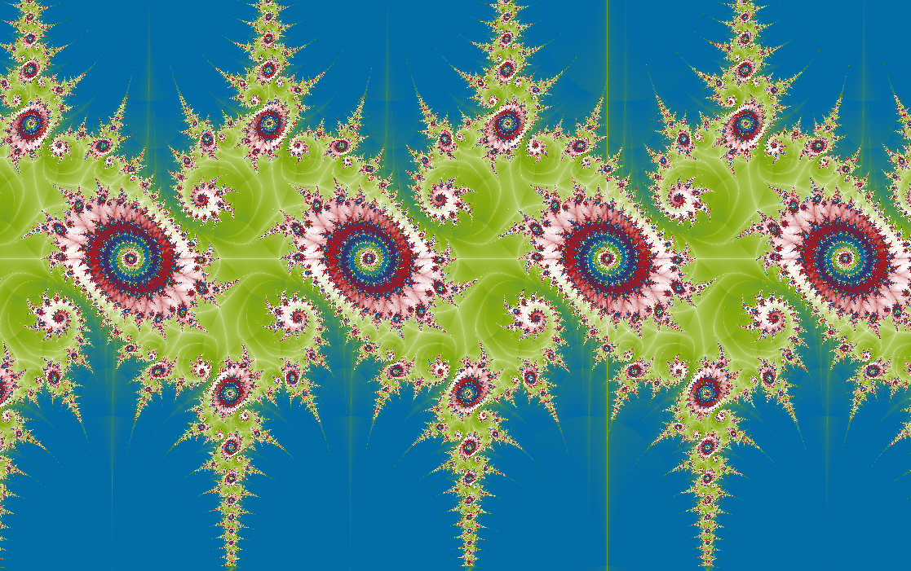

Transcendental maps
Sinusoidal
A sine wave extended into the complex plane until it becomes a landscape.
\(z_{n+1}=k\sin(z_n)\)
The sine function is familiar from circles and waves. In complex iteration it stops being merely periodic and starts building repeated corridors, folds, and escape channels.

What to try first
Look for repeated bands. Sine keeps a memory of periodicity even after being promoted to complex iteration.
Move the orbit selector across a band boundary and watch the path switch from contained motion to escape.
Try escape angle coloring to see the directional channels more clearly.
Mathematical notes
Complex sine iteration
wxChaos iterates \(z_{n+1}=k\sin(z_n)\). For complex \(z=x+iy\), \(\sin(z)=\sin(x)\cosh(y)+i\cos(x)\sinh(y)\). The hyperbolic terms can grow rapidly in the imaginary direction, which is why escape channels appear even though ordinary real sine stays bounded.
Coloring lenses
The set stays the same, but each rendering method asks a different question about the orbit.


Gaussian integer
Measures how closely escaping orbits pass near the complex integer lattice.
Apply in wxChaos

Triangle inequality
Turns relationships inside the orbit into layered, topographic texture.
Apply in wxChaos
Orbit traps
Colors points by how closely their orbits pass near the real and imaginary axes.
Apply in wxChaos